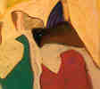

Sari Khoury wrote about Jerusalem, Palestine:

"My family lived in the new sector of Jerusalem, Palestine, until 1948 when we were all forced to leave our homes under a hail of (Israeli) bullets and explosions during the war. We left everything behind including all our family albums. I was seven years at the time, and the ensuing years were extremely difficult for a family that had been accustomed to a comfortable cultured way of life. My father was a headmaster of an idealistic private school which he had founded with educator Khalil Sakakini. He had invested a lifetime of hard earned savings and an unrelenting dedication for liberal education only to have them crushed; but he continued to teach and enlighten others for the rest of his life.
My upbringing was mainly in Ramallah, at the time a beautiful resort village with inhabitants from time immemorial, very industrious and bent on education. Having lost everything and not being able to return, life was a bitter economic struggle for my family of eight children. My parents worked so hard to keep us together as a family unit. Due to economic difficulties my older siblings were forced to leave home at an early age to seek work and education. My older sisters married before completing their education to escape the yoke of poverty. Thus our family was being dispersed gradually each of us ending up in some corner of the world or another -- like all the rest of the Palestinians."
Copyright, Samia A. Halaby, 1999, All rights reserved. To request permission to reproduce any part of these pages send email to samia@interport.net
Select from the following menu representing the entire studio:
![[Art on the Net]](/images/artnet_button.gif)
![[Gallery]](/images/gallery_button.gif)
![[Studios]](/images/studios_button.gif)
![[What's New]](/images/whats_new_button.gif)